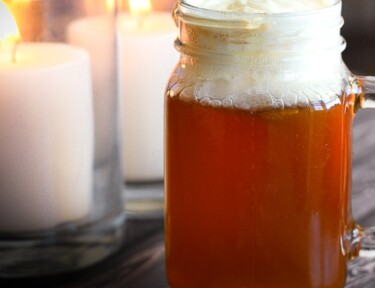

Introduction

Butterbeer is a fictional drink that we see so often in the Harry Potter series. It is often described as one of the tastiest drinks and almost considered a staple drink in the world of Harry Potter.
Now butterbeer is no more a fictional drink. The recipe below takes you through a step-by-step method to whisk a butterbeer, in less than 30 minutes.
So Let's Start
Ingredients
- 2 litres cream soda chilled
- 1/4 tsp caramel extract
- 1 cup heavy whipping cream
- 1/2 cup butterscotch topping
- 1/4 cup powdered sugar
Instructions
- Using a large bowl, whip heavy cream until it forms stiff peaks
- Add butterscotch topping and powdered sugar.
- Mix the caramel and butter extracts with the cream soda and then pour the mixture into clear cups or mugs
- Top with butterscotch cream topping and enjoy